mnist | n0400
선택된 학습 풀 400장 내부에서 5-fold CV. 고정 시험 400장은 최종 재학습 뒤에만 평가합니다. 공식 전체 test benchmark가 아닌 교육용 내부 holdout입니다. Test를 반복 비교하며 추가 튜닝하면 독립 최종평가로 볼 수 없습니다.
실행 결과
5-fold 결과
CV 표준편차는 fold 간 변동이며 test 정확도의 신뢰구간이 아닙니다. OOF는 각 fold의 validation loss로 선택된 checkpoint의 진단 결과입니다.
Epoch별 학습·검증 곡선
학습 loss에는 augmentation과 학습 모드가 적용되며, 검증은 평가 모드입니다.
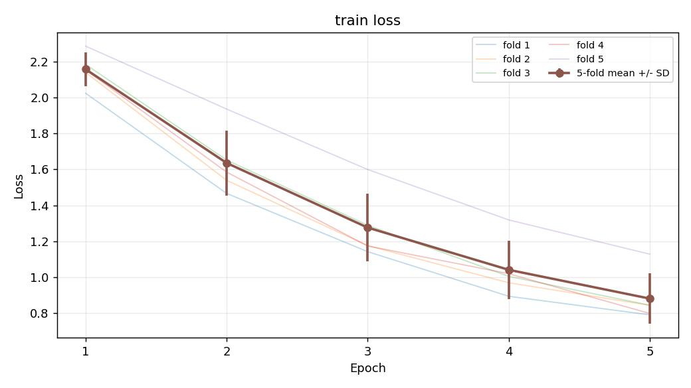
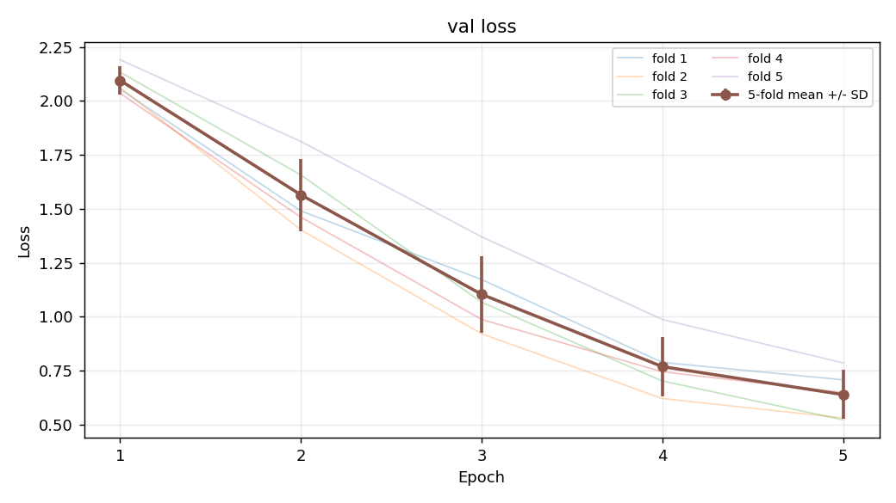
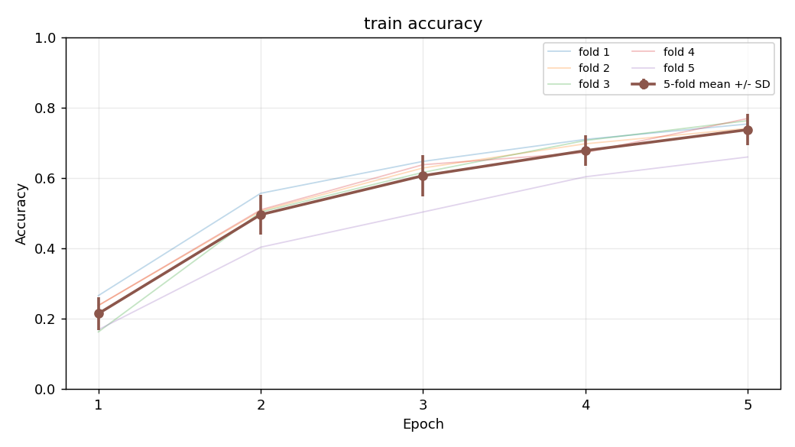
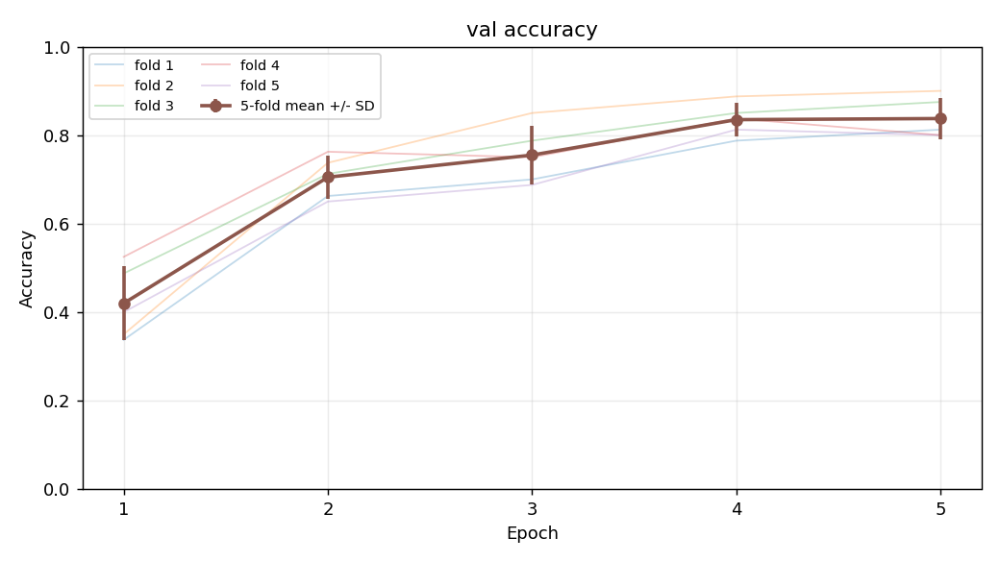
Confusion matrix
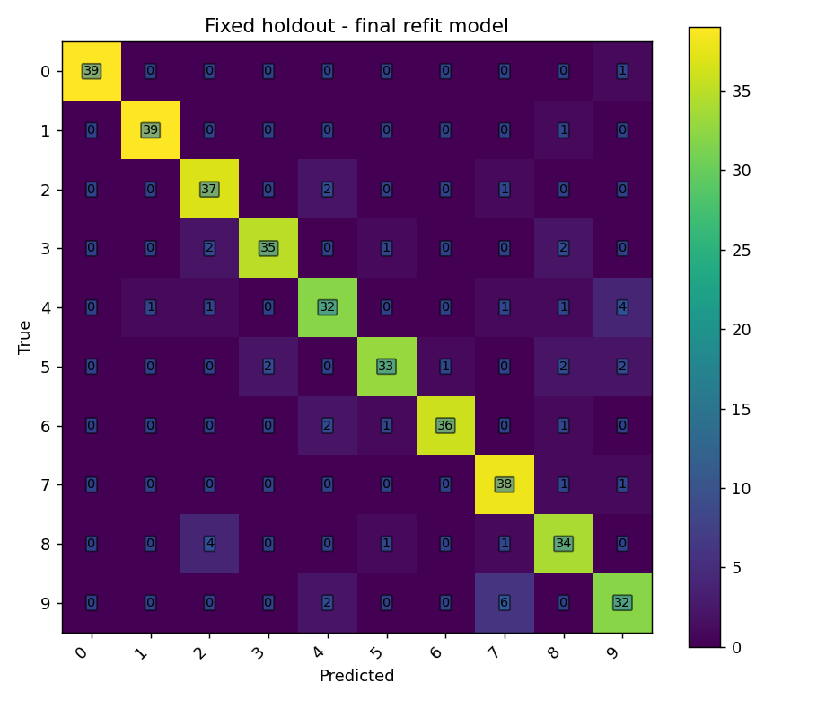
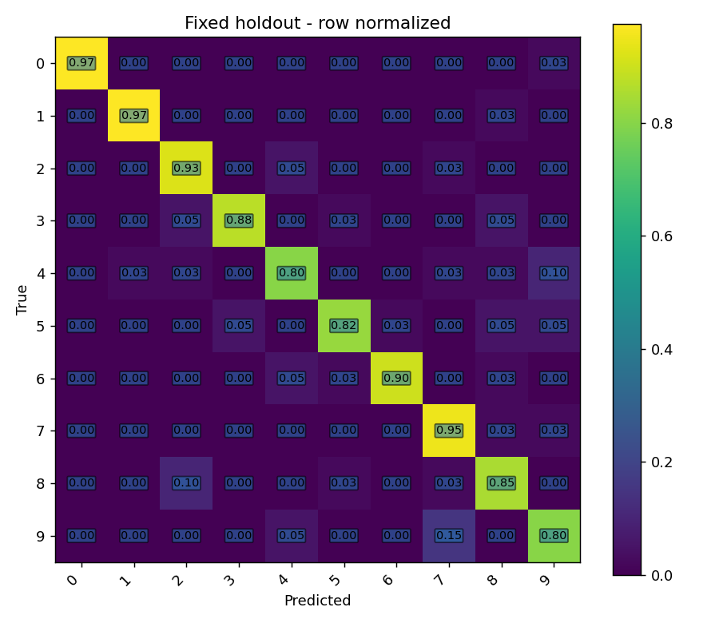
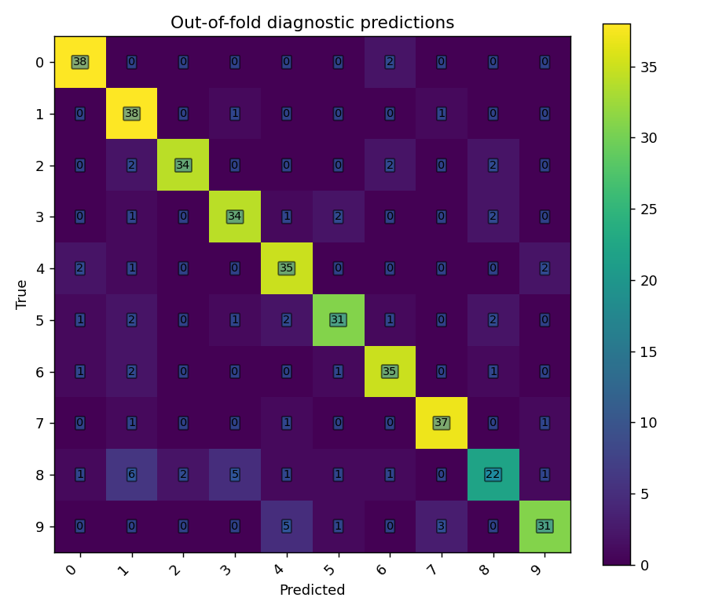
시험 이미지 예측

True: 2
Pred: 2
p: 0.801
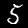
True: 5
Pred: 5
p: 0.678

True: 3
Pred: 3
p: 0.792
True: 8
Pred: 8
p: 0.683

True: 7
Pred: 7
p: 0.944
True: 9
Pred: 9
p: 0.843

True: 3
Pred: 3
p: 0.811

True: 1
Pred: 1
p: 0.851

True: 3
Pred: 8
p: 0.236
True: 1
Pred: 1
p: 0.895
True: 7
Pred: 7
p: 0.884

True: 5
Pred: 5
p: 0.798

True: 7
Pred: 7
p: 0.932

True: 4
Pred: 4
p: 0.643
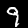
True: 9
Pred: 9
p: 0.666
True: 1
Pred: 1
p: 0.765
True: 5
Pred: 5
p: 0.920
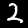
True: 2
Pred: 2
p: 0.867
실제 오분류

True: 2
Pred: 4
p: 0.533

True: 5
Pred: 6
p: 0.219

True: 3
Pred: 2
p: 0.409

True: 9
Pred: 4
p: 0.533

True: 8
Pred: 2
p: 0.788
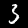
True: 3
Pred: 5
p: 0.337

True: 2
Pred: 7
p: 0.814

True: 5
Pred: 8
p: 0.509
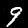
True: 9
Pred: 7
p: 0.568

True: 4
Pred: 1
p: 0.625
True: 8
Pred: 7
p: 0.356
True: 6
Pred: 4
p: 0.417

True: 3
Pred: 8
p: 0.236
True: 4
Pred: 8
p: 0.556
True: 9
Pred: 7
p: 0.472
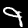
True: 9
Pred: 4
p: 0.444

True: 4
Pred: 2
p: 0.272
True: 1
Pred: 8
p: 0.243
실행 설정
{
"domain": "mnist",
"model": "lenet_small",
"epochs": 5,
"batch_size": 32,
"learning_rate": 0.001,
"weight_decay": 0.0001,
"dropout": 0.2,
"width": 16,
"augmentation": true,
"seed": 42,
"cv_seed": 137,
"subset_seed": 421,
"train_count": 400,
"cpu_threads": 4,
"name": "n0400"
}전체 비교 보고서